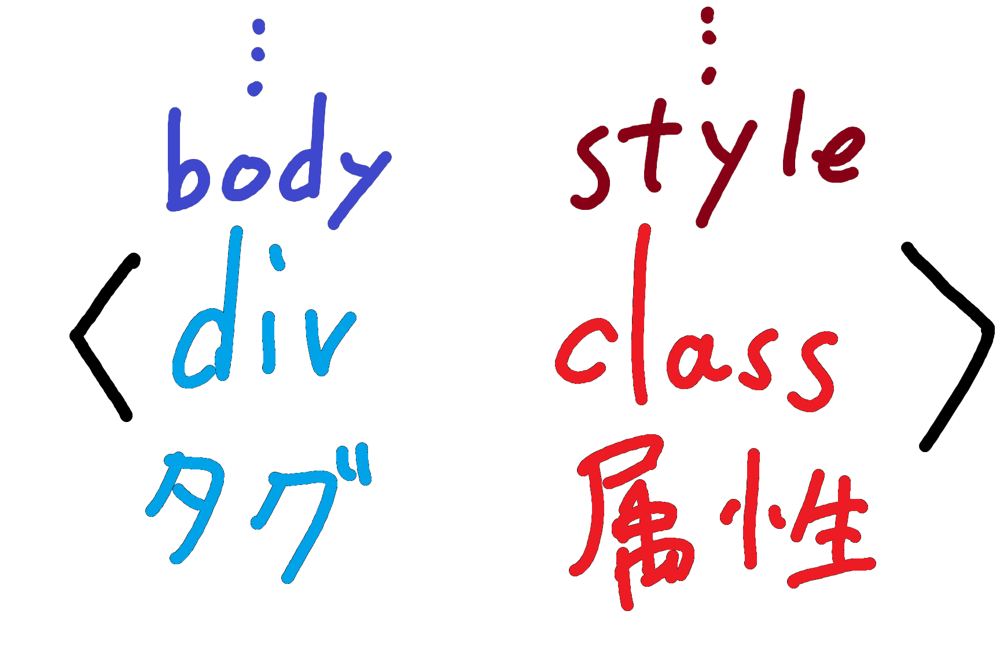
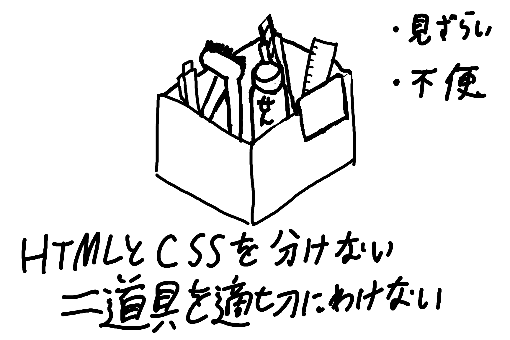
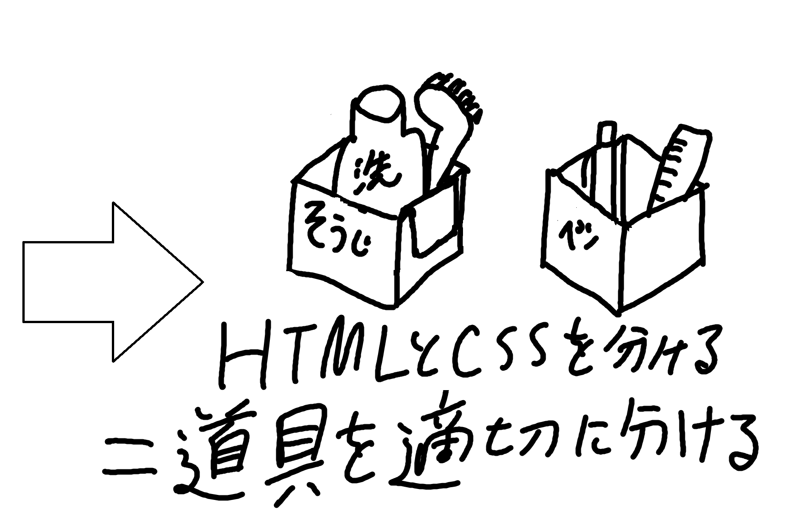
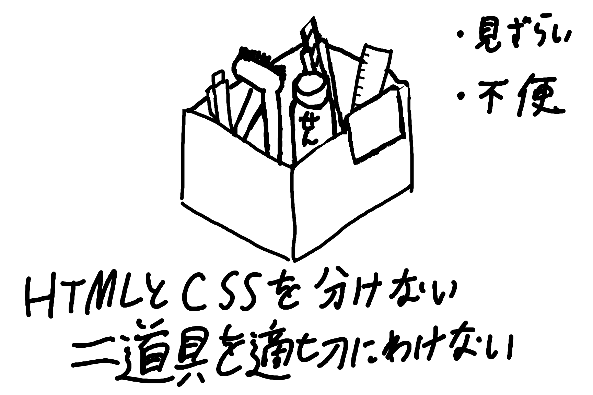
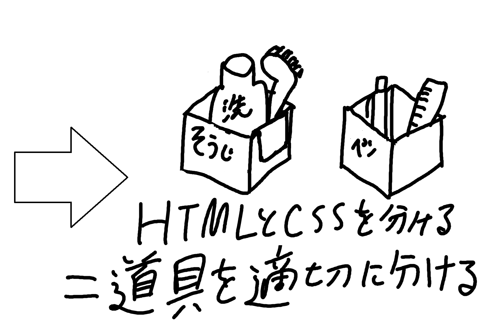

１．HTML
- 概要 HTMLはHyper Text Markup Language の略であり、主にウェブサイト制作に使われるプログラミング言語です。
- タグについて HTMLではタグと呼ばれる印によってコンピュータに命令を行っています。
画像の貼り付けや動画を埋め込み、記事全体のデザインといった様々なことが行えます。
タグの種類や、そのタグにつけられた属性によって特定の動作や性質を命令文に持たせてウェブページを作っています。
代表例：タグ→＜br＞:改行 ＜div＞:塊の区分 ＜body＞:核となる塊の区分 ＜h1＞:見出し用の区分
属性→class:cssにあるプログラムを引っぱり出せる style:色の変更や字の大きさを変えれたりできる

タグ、属性ともにかなりの数があるため主要なタグは多少覚えておくことが肝要です。
２．GIT
- 概要
GITはソースコードや変更履歴を管理できるバージョン管理システムです。
ファイルのバージョンを管理するため、簡単に前のバージョンに戻したりできます。
※ソースコード：プログラミング言語を用いて記述したプログラムの設計図
- 生まれた背景
背景としては、データを共同で編集する現場では度重なる変更によって最新のものがどれかわからなくなったり、
消してはいけないものを誤って消してしまったりといった管理のしずらさによる能率の悪さがありました。
それを改善するため、バージョンや変更履歴を残し保管しておくことでわかりずらさを減らすようにしてあるのです。
３．CSS
- 概要
CSSとはウェブページのレイアウト、つまり見た目を変えるためのものです。
HTMLとは分離して存在し、見栄え用のプログラムを組みます。
- 詳細
HTMLでも見た目の部分、例えば背景の色の変更といったものや枠の追加ができます。
しかし、HTMLのもともとの役割は文章に関することであってデザインがメインではありません。
そのためHTML内でデザインに関するプログラムをすると不備が生じたり、見るデバイスによって見え方が変わったり
してしまい、それに加えてソースコードも非常に見づらくなる欠点がありました。

そこでHTMLからデザインに関するものを分離して、
デザインに関することはCSS、文章に関することはHTMLと役割を分担させ、
エラーの防止やコードの見やすさの改善が行われたわけです。
参考にさせていただいた外部ウェブページURL
HTMLについて→HTMLとは？初心者向けに基礎知識を分かりやすく解説
GITについて→【入門】Gitとは？できることや使い方、GitHubとの違いをわかりやすく解説
CSSについて→CSSの基本的な書き方・CSSとは？
- 概要 GITはソースコードや変更履歴を管理できるバージョン管理システムです。
- 生まれた背景 背景としては、データを共同で編集する現場では度重なる変更によって最新のものがどれかわからなくなったり、
ファイルのバージョンを管理するため、簡単に前のバージョンに戻したりできます。
※ソースコード：プログラミング言語を用いて記述したプログラムの設計図
消してはいけないものを誤って消してしまったりといった管理のしずらさによる能率の悪さがありました。
それを改善するため、バージョンや変更履歴を残し保管しておくことでわかりずらさを減らすようにしてあるのです。
- 概要 CSSとはウェブページのレイアウト、つまり見た目を変えるためのものです。
- 詳細 HTMLでも見た目の部分、例えば背景の色の変更といったものや枠の追加ができます。
HTMLとは分離して存在し、見栄え用のプログラムを組みます。
しかし、HTMLのもともとの役割は文章に関することであってデザインがメインではありません。
そのためHTML内でデザインに関するプログラムをすると不備が生じたり、見るデバイスによって見え方が変わったり
してしまい、それに加えてソースコードも非常に見づらくなる欠点がありました。

そこでHTMLからデザインに関するものを分離して、
デザインに関することはCSS、文章に関することはHTMLと役割を分担させ、
エラーの防止やコードの見やすさの改善が行われたわけです。
参考にさせていただいた外部ウェブページURL
HTMLについて→HTMLとは？初心者向けに基礎知識を分かりやすく解説
GITについて→【入門】Gitとは？できることや使い方、GitHubとの違いをわかりやすく解説
CSSについて→CSSの基本的な書き方・CSSとは？
HTMLについて→HTMLとは？初心者向けに基礎知識を分かりやすく解説
GITについて→【入門】Gitとは？できることや使い方、GitHubとの違いをわかりやすく解説
CSSについて→CSSの基本的な書き方・CSSとは？